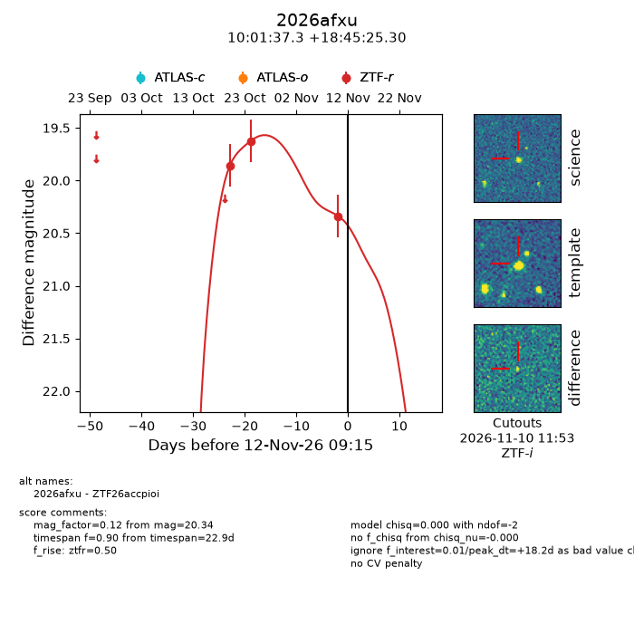
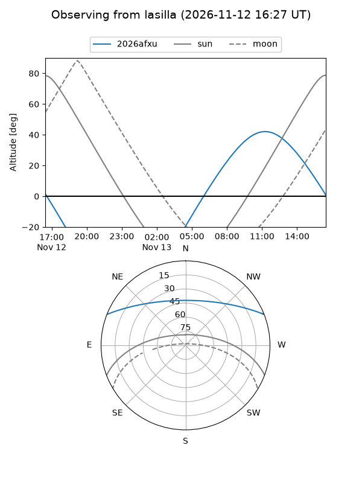
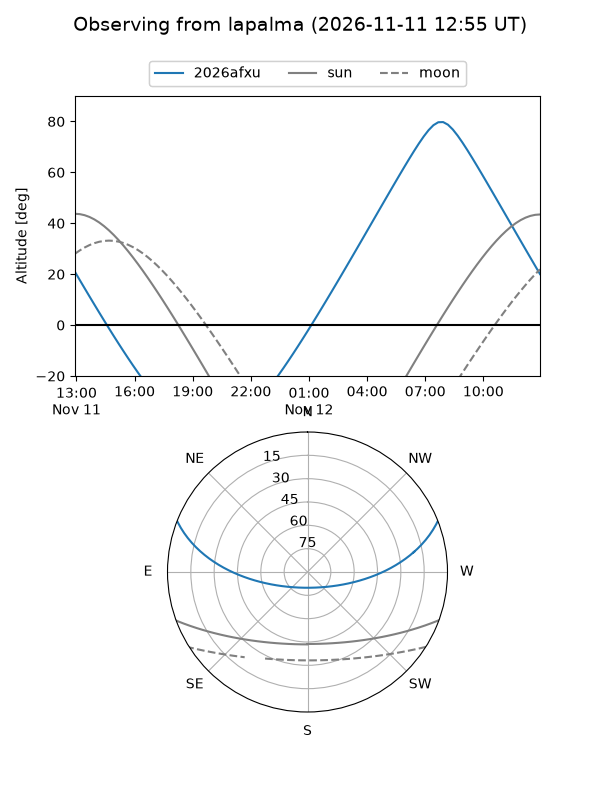
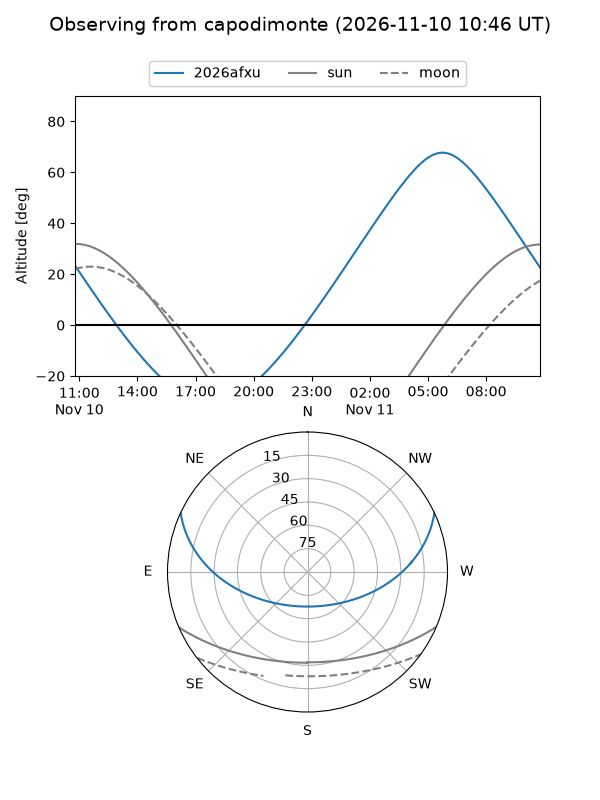
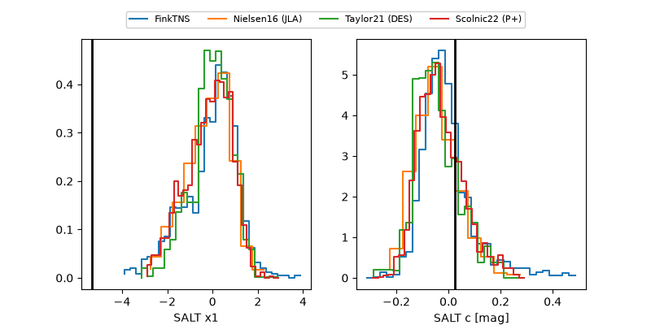

2026afxu
Target 2026afxu at 2026-11-12 09:20
Aliases and brokers:
FINK-ZTF: ztf.fink-portal.org/ZTF26accpioi
Lasair-ZTF: lasair-ztf.lsst.ac.uk/objects/ZTF26accpioi
ALeRCE-ZTF: alerce.online/object/ZTF26accpioi
YSE-PZ: ziggy.ucolick.org/yse/transient_detail/2026afxu
TNS name: wis-tns.org/object/2026afxu
Direct TNS query: direct search
alt names
ZTF26accpioi (ztf,fink_ztf)
2026afxu (tns,yse)
Coordinates:
equatorial (ra, dec) = 150.4053,+18.75703
equatorial (HMS+DMS) = 10:01:37.27,+18:45:25.30
galactic (l, b) = (215.8325,+50.21030)
Flags:
peak dt: +18.2
Photometry:
last ztfr=20.34
3 ztfr detections
Lightcurve

Visibility



Additional plots
